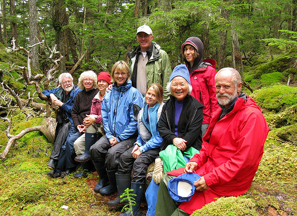

2008 Week 34 in Review
August 17 to August 23, 2008
Here's this week's cruising schedule aboard Catalyst, from Juneau to Petersburg:
Sunday, August 17 - Juneau to Limestone Inlet: kayak paddle in river, salmon in river and along shore (rainy)
Monday, August 18 - Limestone Inlet to Ford's Terror: meet Ranger Tim, Kayak Ford's Terror, brown bear in creek (foggy)
Tuesday, August 19 - Ford's Terror to Wood Spit: hike Ford's Terror highlands, Dawes Glacier, seals, whales (hazy sun)
Wednesday, August 20 Wood Spit to Donkey Bay: great whale show, paddle Donkey Bay, 1000's of salmon in creek (sunny)
Thursday, August 21 - Donkey Bay to Brothers Islands: forest walk, kayak paddle w/ eagle, sea lions & whales, meet Westward & Fred
Friday, August 22 - Brothers Islands to Scenery Cove: see lighthouse, visit Norio, glacier walk, slide show (windy night and rough water)
Saturday, August 23 - Scenery Cove to Petersburg: last run, pack and prepare to return to what passes for civilization (but isn't)
Here's the crew:

And here're the passengers: 
This week, I saw Ranger Tim. I first met him in 2000 while on the Westward. We picked him up on the way to Fords Terror and chatted for a few hours. I love seeing all the Southeast Alaska people I worked with nine years ago, especially since they've now taken on a cartoonish personality in my mind.
I paddled up Fords Terror again (the glacier was great), picked up more crabs, and met up with whale researcher Fred Sharpe. I also took some video of the Catalyst, which I'll post once I figure out how to get it out of my camera. For now, here's a picture of Bairds Glacier:
Westward Rendezvous
We rafted up with the Westward on Thursday, on its return from a 20,483-mile journey around the Pacific:
We've been getting updates on their progress for the past year or two that they've been out, so it was great to see them all again. They anchored at the Brothers Islands to rendezvous with us for a potluck dinner. The Westward looks great after all those miles, and owner Hugh was still the life of the party. I'll write a much more detailed account of the meet-up once I have a few minutes to myself, since it was a highlight of the trip. Stay tuned!
Business as usual
I removed the exhaust valve from cylinders one and two, just to continue cleaning them up. Of course they were bad, so I put in spares. I also noticed the oil psi going down over time, and it's time for an oil change if we continue changing based on time and not on sample results. The oil smells a little diesel-y and with all the overloading fuel, it could be soaking down past the piston or an external leak, and making its way into the crankpit. I will change it in Petersburg for sure and take a sample for the lab.
A good home for the Ready?
Word is spreading about the neat old tug Ready, which is for sale only to a good owner. The boat needs to be hauled out for some hull repair, and the new owner needs the guts to maintain, insure and operate a tug with a direct reversing Atlas-Imperial diesel.
Problems on the Velero IV?
I've heard that the Velero is having some timing problems these days. She's a fish packer and research boat that's powered by the biggest Atlas diesel still running. Owner Irv does a great job not only keeping the boat looking good, but also finding jobs to keep her employed full time. As I always say, the best way to maintain and preserve an engine is to give it some real work to do.
The Velero's engine was extensively modified in the 1950s with a second camshaft, Bosch fuel pumps, and injectors to increase its horsepower and efficiency. The work was done by the same guy who added the Bosch fuel pump to the Portola down in Seal Beach. The new port-side camshaft has something like a dog clutch with a precise gap, so when going into reverse, the second camshaft's timing changes. The bolts holding the spring-loaded detent for the "gaped dog clutch" and the timing sprocket both broke. Fatigue, maybe, but the system is a one-of-a-kind. Irv may not be able to do much more than replace them and watch them more closely. I really wish I could do more than troubleshoot over the phone right now, but hopefully I'll be there during winter maintenance for a closer look.
Lost Heavy-duties
Dirk sent us some pictures from his own collection of the Broughton Straits, a 100-foot tug that he piloted to Port Townsend in 1978:
Dirk recalled that the Broughton Straits was powered by a six- or eight-cylinder Washington diesel that made about 300 horsepower, and he remembered that "it had a large turbo but I was told the turbo had been 'deactivated' and wasn't spinning any more." He also remembered that it had a Fairbanks-Morse gen set. He sent several pictures that he'd taken in 1978, including this one:
We've gone through the Washington Iron Works records that we have, and found the engine card. Engine 7624 was ordered on October 17th, 1947 by the Straits Towing & Salvage Co of Vancouver, BC through the Vancouver Machinery Depot.
According to the card, the engine was a model 6-160 (same as the Donald R) with six cylinders at 12 3/4" by 16". These models got between 375 and 400 horsepower at 327 to 360 rpm. The Broughton Straits' record shows it rated at 375 horsepower, with direct reverse and no clutch.
The card also shows the tug's original name as Stan Point, but as with many of the records, that name was crossed out and the new name written beside. The folks at Washington Iron Works made a lot of notes on this record card as they did maintenance and repairs through the years. We've uploaded a copy of it here, and the reverse side with some testing notations here. Dan also marked an "O" for "operational" on his master list of Washington engines, so he's clearly familiar with the tug and I'll ask him about it when I get back to Seattle.
Dirk heard that the Broughton Straits was later taken down to San Francisco a few years after he brought it to Port Townsend. He visited the Bay Area in 1994 and saw a mostly-sunken derelict that folks told him was the same tug. Another great old boat with a great old engine lost.
California readers, has anyone seen this derelict tug? We'll send an Old Tacoma Marine Inc t-shirt to anyone who sends us good photos.
Dirk also sent us an interesting picture of an old Atlas-Imperial diesel:
This was taken in 1978 at the north end of Lake Union, probably in one of those lots off Northlake facing the I-5 bridge, just after it was "bulldozed off to the side of the property." Dirk says he still has its control station.
OTM Inc Weekly eBay Auction
This week's prize from the OTM Inc shop are six (6) DRG-AR Series Field Configurable Limit Alarm Modules: